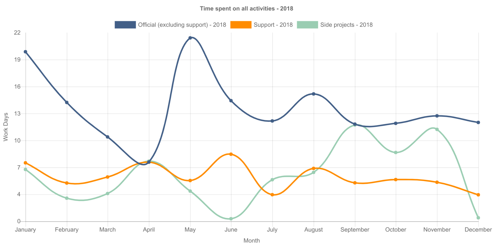
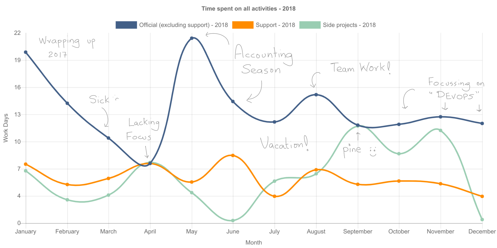

(map reflect shtuff)
=> ramblings by Ahmad Nazir
For the last 2 years, I have been keeping a record of most tasks I work on. The idea is perform objective retrospectives i.e. rely on data rather than a feeling to evaluate how things are going. Most of my tasks are done while sitting in front of a screen, so for me, the strategy that I have devised has been working fairly well. Maybe in a few years or in a different life when I don’t have to work with computers all the time, I’ll have to think of a different way to track my activities. Nevertheless, the process works for me. It requires some discipline but in the end it helps me figure out a personal why or vision, gives me direction and helps me communicate better with my peers.
I try to label most of my tasks but broadly I want to track the following 3 types:
I can’t track everything and don’t try to track everything. For example, tracking the time spend on every discussion with a colleague can be resource intensive by itself and it doesn’t serve any purpose. The idea is to keep focus by tracking planned activities and use the discipline to minimize distractions.
A simple way to visualize how the year went is to sum of the time spent on different types of activities. This is how 2018 looked for me:

Well, what does it mean? Without any context it means… didly squat! The different times of the year need to be correlated with what happened back then. This is where monthly retrospectives are helpful.
Here is an lightly annotated version which is more meaningful:

The annotated version helps… but it would be amazing if I could also know how I felt during the whole year. Just working more or or less on something doesn’t mean that I felt inspired or not. So one of things that I am planning on trying out for the next year is also track morale at different times of the year (using an app like Dailio). This is good enough for now.